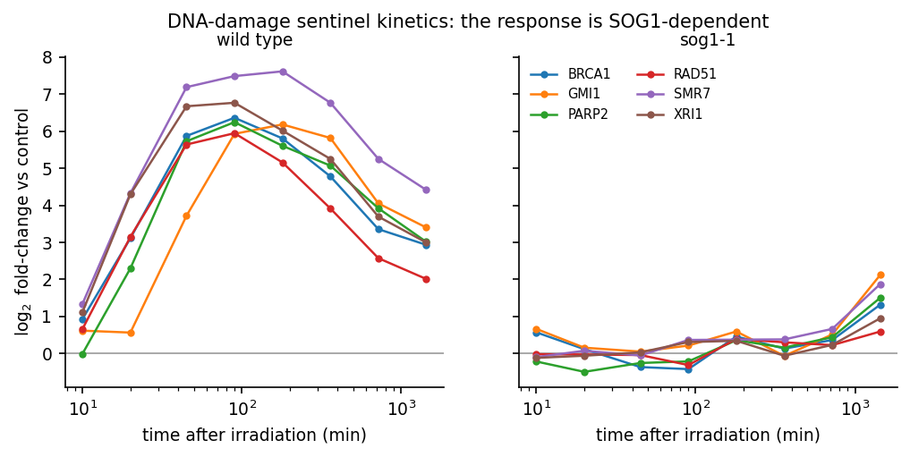

arabidopsis-drem-osdr · NASA OSDR
DREM attributes each bifurcation in a time-series to a transcription factor, using a prior that is normally binary and tissue-blind. This pipeline lets a single-cell atlas act on the model rather than on its annotation — by writing cell-type context into the score column DREM already reads.
A single-cell atlas that informs the model, not just its labels.
The Dynamic Regulatory Events Miner finds where co-expressed genes diverge and asks which transcription factor explains each split. That question is answered against a static TF–gene interaction prior, and that prior normally says only whether a TF can bind a promoter — not whether it is present in the cells producing the signal.
iDREM accepts single-cell data, but its own documentation states the cell-type data “is not used when predicting the iDREM model”. It annotates finished nodes. Here the information moves upstream without touching the engine: DREM reads the third column of its TF–gene file as a score in [0,1], so each timepoint is deconvolved against a 183-cluster single-nucleus atlas and every edge is re-weighted by whether its regulator is expressed in the cell types actually present.
10 min to 72 h of γ-irradiation, from 108 timed samples across four OSDR accessions.
Deconvolved per timepoint, each carrying a 32-dimensional auto-decoder latent code.
Flat, binding-only and cell-type-weighted — identical search, identical seed.
Recovered before any regulatory model is fitted.
After cross-study harmonisation, all six canonical DNA-damage sentinel genes exceed 2-fold induction in wild type and trace a clean rise–peak–decay kinetic. In sog1-1, a knockout of the master regulator, the same genes are flat. No step in the harmonisation sees genotype, so this is the strongest available evidence that the assembled series measures biology rather than batch structure.

What is re-assembly, and what is genuinely cross-study.
OSD-498, OSD-508 and OSD-510 are three accessions of one experiment — that of Bourbousse, Vegesna & Law (PNAS 2018), who built their own DREM model over these data and reported 11 co-expressed gene groups. Assembling them is useful, because it is how the 10 and 45 minute timepoints join the 24-hour course, but it is re-assembly rather than integration. The genuinely cross-study arm is OSD-782 — which is also where the design is weakest, since it crosses a dose regime, and is therefore held out rather than pooled.
OSD-219 is excluded outright: all 32 of its BioSample identifiers are identical to OSD-218’s. The duplicate is re-detected from sample-name overlap on every run rather than hard-coded, so the exclusion cannot outlive the condition that justifies it.
| What | Where |
|---|---|
| Whole pipeline, end to end | bash scripts/run_all.sh |
| Resolve every URL, download nothing | bash scripts/run_all.sh --dry-run |
| Numbered acquisition & analysis steps | scripts/00_–14_ |
| Quality-control report per stage | results/qc/ |
| Manuscript, PDF and Word from one source | cd manuscript && make pdf docx |
| Provenance, licence and SHA-256 per file | MANIFEST.tsv |
results/ rather
than typed, and every citation is resolved against Crossref with an asserted first author and
year. Large inputs — OSDR count matrices, the DAP-seq archive, ChIP-seq coverage and the DREM
jar — are catalogued but not redistributed; run_all.sh reconstructs them.